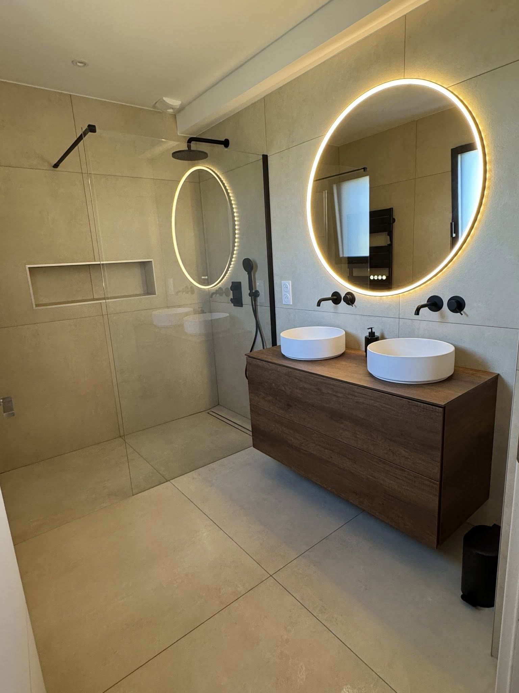
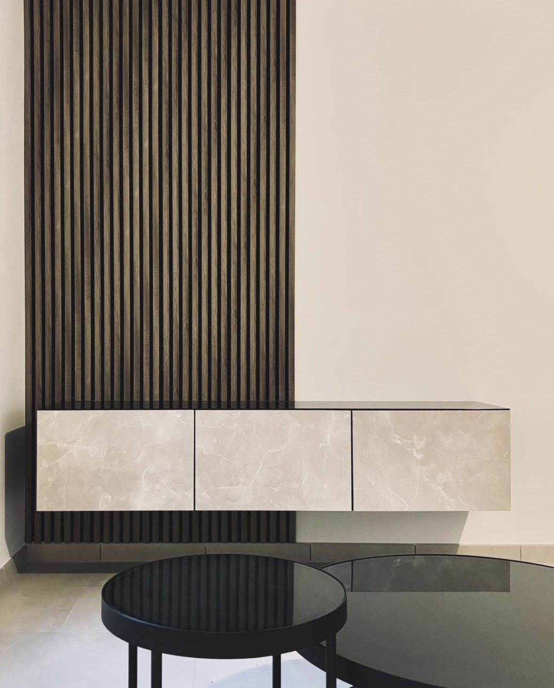
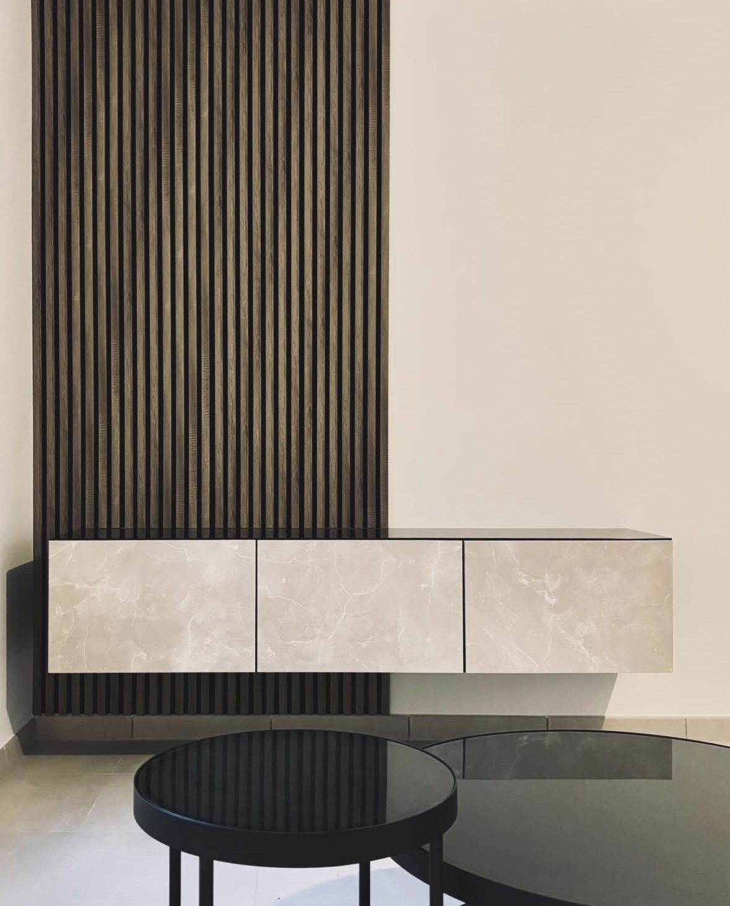
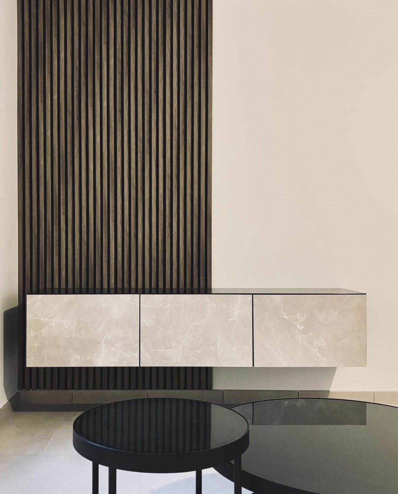
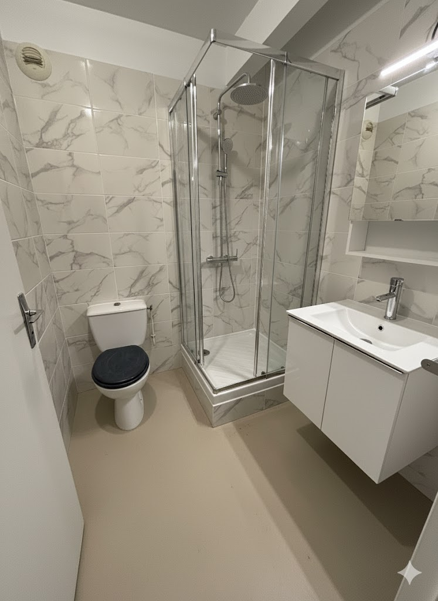

Mes Réalisations : Quand l'idée devient réalité
Cette page est la vitrine de mon savoir‑faire. Chaque projet que je présente est le reflet de mon engagement qualité et de ma capacité à fournir des solutions sur mesure.
Parcourez mes travaux pour découvrir l'excellence et l'attention que j'apporte aux détails.


 




Aménagement


Salle de bain

Cuisine

Autre